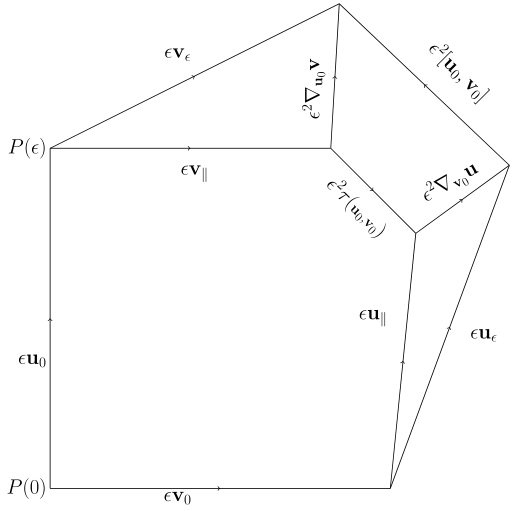

This picture
finally made the difference between these two things clear.
The lie bracket moves along the
flow, while the torsion moves along
parallel transport.
This is why the sides of the parallelogram that measure torsion form,
well, a parallelogram: we set them up using parallel transport.
On the other hand, the lie bracket measures the actual failure of the parallelogram
from being formed.